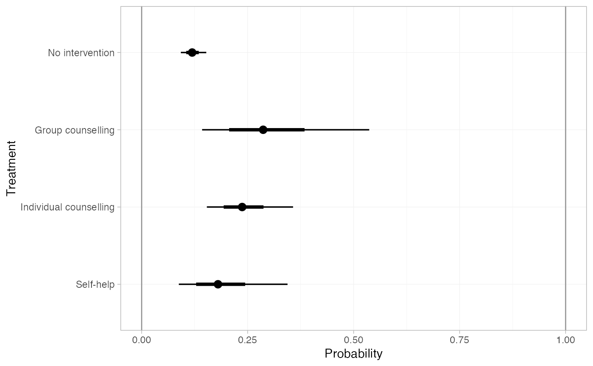
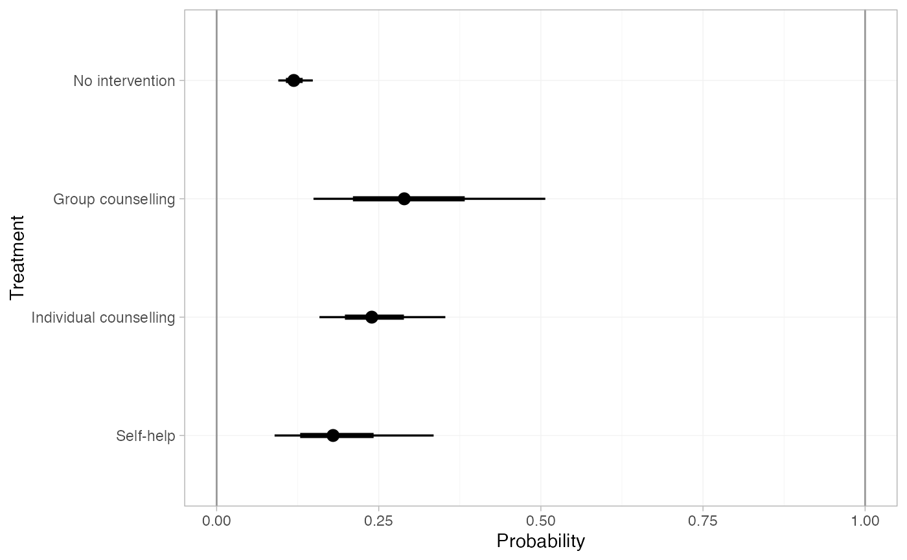
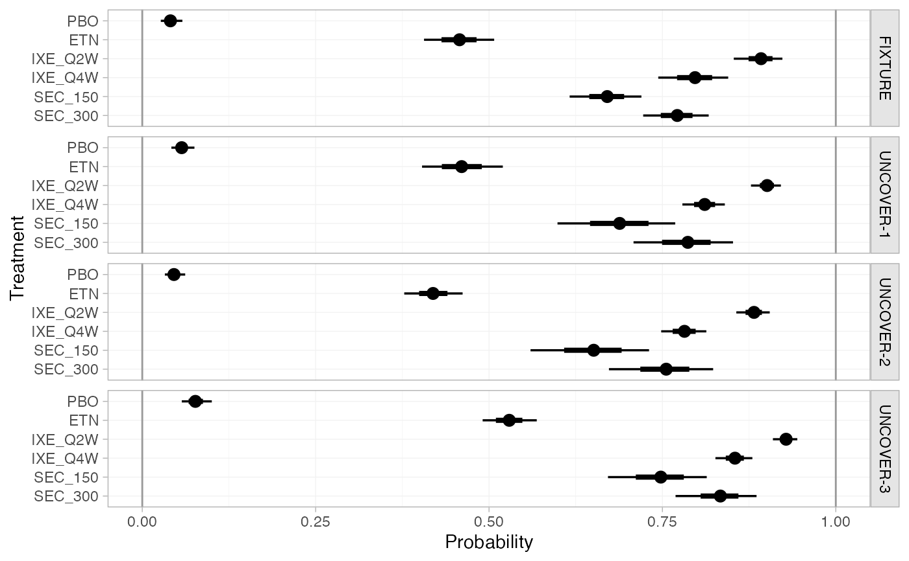
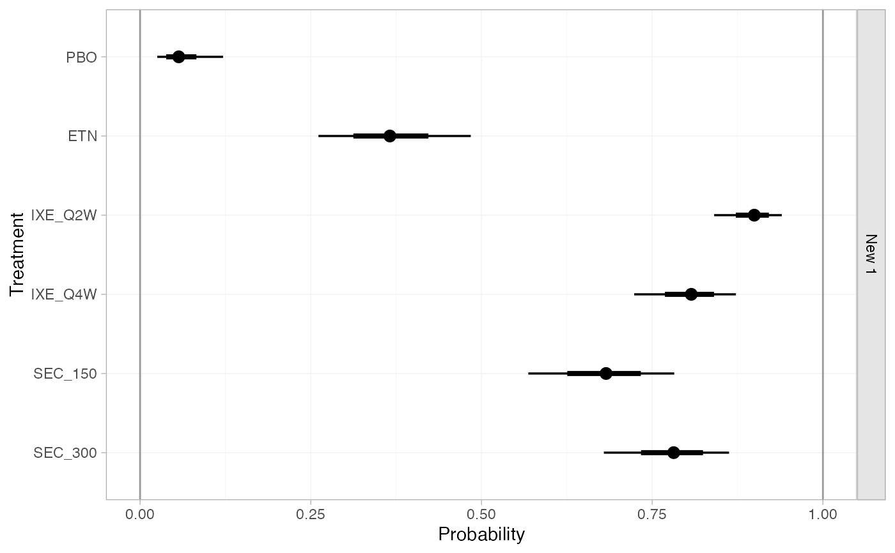

Obtain predictions of absolute effects from NMA models fitted with nma().
For example, if a model is fitted to binary data with a logit link, predicted
outcome probabilities or log odds can be produced.
Usage
# S3 method for stan_nma
predict(
object,
...,
baseline = NULL,
newdata = NULL,
study = NULL,
trt_ref = NULL,
type = c("link", "response"),
level = c("aggregate", "individual"),
baseline_type = c("link", "response"),
baseline_level = c("individual", "aggregate"),
probs = c(0.025, 0.25, 0.5, 0.75, 0.975),
predictive_distribution = FALSE,
summary = TRUE
)Arguments
- object
A
stan_nmaobject created bynma().- ...
Additional arguments, passed to
uniroot()for regression models ifbaseline_level = "aggregate".- baseline
An optional
distr()distribution for the baseline response (i.e. intercept), about which to produce absolute effects. IfNULL, predictions are produced using the baseline response for each study in the network with IPD or arm-based AgD.For regression models, this may be a list of
distr()distributions of the same length as the number of studies innewdata(possibly named by the study names, or otherwise in order of appearance innewdata).Use the
baseline_typeandbaseline_levelarguments to specify whether this distribution is on the response or linear predictor scale, and (for ML-NMR or models including IPD) whether this applies to an individual at the reference level of the covariates or over the entirenewdatapopulation, respectively. For example, in a model with a logit link withbaseline_type = "link", this would be a distribution for the baseline log odds of an event.Use the
trt_refargument to specify which treatment this distribution applies to.- newdata
Only required if a regression model is fitted and
baselineis specified. A data frame of covariate details, for which to produce predictions. Column names must match variables in the regression model.If
level = "aggregate"this should either be a data frame with integration points as produced byadd_integration()(one row per study), or a data frame with individual covariate values (one row per individual) which are summarised over.If
level = "individual"this should be a data frame of individual covariate values, one row per individual.If
NULL, predictions are produced for all studies with IPD and/or arm-based AgD in the network, depending on the value oflevel.- study
Column of
newdatawhich specifies study names or IDs. When not specified: ifnewdatacontains integration points produced byadd_integration(), studies will be labelled sequentially by row; otherwise data will be assumed to come from a single study.- trt_ref
Treatment to which the
baselineresponse distribution refers, ifbaselineis specified. By default, the baseline response distribution will refer to the network reference treatment. Coerced to character string.- type
Whether to produce predictions on the
"link"scale (the default, e.g. log odds) or"response"scale (e.g. probabilities).- level
The level at which predictions are produced, either
"aggregate"(the default), or"individual". Ifbaselineis not specified, predictions are produced for all IPD studies in the network iflevelis"individual"or"aggregate", and for all arm-based AgD studies in the network iflevelis"aggregate".- baseline_type
When a
baselinedistribution is given, specifies whether this corresponds to the"link"scale (the default, e.g. log odds) or"response"scale (e.g. probabilities).- baseline_level
When a
baselinedistribution is given, specifies whether this corresponds to an individual at the reference level of the covariates ("individual", the default), or from an (unadjusted) average outcome on the reference treatment in thenewdatapopulation ("aggregate"). Ignored for AgD NMA, since the only option is"aggregate"in this instance.- probs
Numeric vector of quantiles of interest to present in computed summary, default
c(0.025, 0.25, 0.5, 0.75, 0.975)- predictive_distribution
Logical, when a random effects model has been fitted, should the predictive distribution for absolute effects in a new study be returned? Default
FALSE.- summary
Logical, calculate posterior summaries? Default
TRUE.
Value
A nma_summary object if summary = TRUE, otherwise a list
containing a 3D MCMC array of samples and (for regression models) a data
frame of study information.
See also
plot.nma_summary() for plotting the predictions.
Examples
## Smoking cessation
# \donttest{
# Run smoking RE NMA example if not already available
if (!exists("smk_fit_RE")) example("example_smk_re", run.donttest = TRUE)
# }
# \donttest{
# Predicted log odds of success in each study in the network
predict(smk_fit_RE)
#> ---------------------------------------------------------------------- Study: 1 ----
#>
#> mean sd 2.5% 25% 50% 75% 97.5%
#> pred[1: No intervention] -2.78 0.33 -3.47 -3.00 -2.77 -2.55 -2.17
#> pred[1: Group counselling] -1.68 0.51 -2.67 -2.02 -1.69 -1.33 -0.67
#> pred[1: Individual counselling] -1.94 0.39 -2.72 -2.19 -1.94 -1.70 -1.19
#> pred[1: Self-help] -2.29 0.51 -3.30 -2.64 -2.29 -1.95 -1.29
#> Bulk_ESS Tail_ESS Rhat
#> pred[1: No intervention] 5211 2571 1
#> pred[1: Group counselling] 2691 2777 1
#> pred[1: Individual counselling] 2436 2759 1
#> pred[1: Self-help] 3012 2877 1
#>
#> ---------------------------------------------------------------------- Study: 2 ----
#>
#> mean sd 2.5% 25% 50% 75% 97.5%
#> pred[2: No intervention] -2.58 0.78 -4.14 -3.07 -2.56 -2.09 -1.00
#> pred[2: Group counselling] -1.48 0.79 -3.04 -1.99 -1.49 -0.98 0.14
#> pred[2: Individual counselling] -1.74 0.77 -3.22 -2.24 -1.73 -1.25 -0.21
#> pred[2: Self-help] -2.09 0.79 -3.65 -2.58 -2.09 -1.60 -0.48
#> Bulk_ESS Tail_ESS Rhat
#> pred[2: No intervention] 3137 2792 1
#> pred[2: Group counselling] 3314 2706 1
#> pred[2: Individual counselling] 3563 2784 1
#> pred[2: Self-help] 3710 2885 1
#>
#> ---------------------------------------------------------------------- Study: 3 ----
#>
#> mean sd 2.5% 25% 50% 75% 97.5%
#> pred[3: No intervention] -2.14 0.12 -2.38 -2.22 -2.14 -2.06 -1.91
#> pred[3: Group counselling] -1.04 0.45 -1.92 -1.33 -1.04 -0.75 -0.15
#> pred[3: Individual counselling] -1.30 0.26 -1.80 -1.48 -1.31 -1.13 -0.77
#> pred[3: Self-help] -1.65 0.42 -2.47 -1.93 -1.65 -1.37 -0.85
#> Bulk_ESS Tail_ESS Rhat
#> pred[3: No intervention] 11351 2501 1
#> pred[3: Group counselling] 2310 2497 1
#> pred[3: Individual counselling] 1441 2050 1
#> pred[3: Self-help] 2282 2715 1
#>
#> ---------------------------------------------------------------------- Study: 4 ----
#>
#> mean sd 2.5% 25% 50% 75% 97.5%
#> pred[4: No intervention] -4.04 0.57 -5.26 -4.40 -4.01 -3.65 -3.01
#> pred[4: Group counselling] -2.94 0.70 -4.38 -3.38 -2.92 -2.49 -1.57
#> pred[4: Individual counselling] -3.20 0.58 -4.43 -3.57 -3.17 -2.80 -2.10
#> pred[4: Self-help] -3.55 0.68 -4.99 -3.99 -3.53 -3.10 -2.22
#> Bulk_ESS Tail_ESS Rhat
#> pred[4: No intervention] 4501 2302 1
#> pred[4: Group counselling] 3649 2637 1
#> pred[4: Individual counselling] 4197 2915 1
#> pred[4: Self-help] 3813 2851 1
#>
#> ---------------------------------------------------------------------- Study: 5 ----
#>
#> mean sd 2.5% 25% 50% 75% 97.5%
#> pred[5: No intervention] -2.15 0.14 -2.45 -2.24 -2.15 -2.06 -1.88
#> pred[5: Group counselling] -1.05 0.45 -1.90 -1.35 -1.06 -0.76 -0.13
#> pred[5: Individual counselling] -1.32 0.27 -1.83 -1.50 -1.32 -1.14 -0.76
#> pred[5: Self-help] -1.67 0.43 -2.49 -1.96 -1.67 -1.38 -0.82
#> Bulk_ESS Tail_ESS Rhat
#> pred[5: No intervention] 7977 2639 1
#> pred[5: Group counselling] 2235 2589 1
#> pred[5: Individual counselling] 1418 2349 1
#> pred[5: Self-help] 2339 2828 1
#>
#> ---------------------------------------------------------------------- Study: 6 ----
#>
#> mean sd 2.5% 25% 50% 75% 97.5%
#> pred[6: No intervention] -3.43 0.74 -5.03 -3.87 -3.36 -2.92 -2.15
#> pred[6: Group counselling] -2.33 0.83 -4.07 -2.83 -2.30 -1.76 -0.81
#> pred[6: Individual counselling] -2.59 0.73 -4.16 -3.02 -2.55 -2.10 -1.30
#> pred[6: Self-help] -2.94 0.82 -4.71 -3.44 -2.88 -2.38 -1.44
#> Bulk_ESS Tail_ESS Rhat
#> pred[6: No intervention] 3760 2703 1
#> pred[6: Group counselling] 4009 2969 1
#> pred[6: Individual counselling] 4025 2854 1
#> pred[6: Self-help] 3872 2524 1
#>
#> ---------------------------------------------------------------------- Study: 7 ----
#>
#> mean sd 2.5% 25% 50% 75% 97.5%
#> pred[7: No intervention] -3.04 0.44 -3.97 -3.32 -3.00 -2.73 -2.27
#> pred[7: Group counselling] -1.94 0.59 -3.16 -2.33 -1.91 -1.54 -0.81
#> pred[7: Individual counselling] -2.20 0.48 -3.19 -2.50 -2.17 -1.86 -1.35
#> pred[7: Self-help] -2.55 0.59 -3.81 -2.92 -2.53 -2.14 -1.47
#> Bulk_ESS Tail_ESS Rhat
#> pred[7: No intervention] 4403 2574 1
#> pred[7: Group counselling] 3373 2808 1
#> pred[7: Individual counselling] 3138 2510 1
#> pred[7: Self-help] 3247 2739 1
#>
#> ---------------------------------------------------------------------- Study: 8 ----
#>
#> mean sd 2.5% 25% 50% 75% 97.5%
#> pred[8: No intervention] -2.69 0.58 -4.01 -3.03 -2.64 -2.29 -1.65
#> pred[8: Group counselling] -1.59 0.69 -3.05 -2.01 -1.55 -1.12 -0.31
#> pred[8: Individual counselling] -1.85 0.58 -3.12 -2.20 -1.80 -1.45 -0.79
#> pred[8: Self-help] -2.20 0.68 -3.64 -2.63 -2.17 -1.73 -0.96
#> Bulk_ESS Tail_ESS Rhat
#> pred[8: No intervention] 3580 2627 1
#> pred[8: Group counselling] 3444 2347 1
#> pred[8: Individual counselling] 3285 2786 1
#> pred[8: Self-help] 2966 2461 1
#>
#> ---------------------------------------------------------------------- Study: 9 ----
#>
#> mean sd 2.5% 25% 50% 75% 97.5%
#> pred[9: No intervention] -1.85 0.42 -2.72 -2.12 -1.83 -1.55 -1.08
#> pred[9: Group counselling] -0.74 0.58 -1.89 -1.12 -0.74 -0.36 0.41
#> pred[9: Individual counselling] -1.01 0.45 -1.92 -1.31 -1.00 -0.70 -0.13
#> pred[9: Self-help] -1.36 0.58 -2.51 -1.73 -1.34 -0.98 -0.22
#> Bulk_ESS Tail_ESS Rhat
#> pred[9: No intervention] 5344 2766 1
#> pred[9: Group counselling] 3351 2867 1
#> pred[9: Individual counselling] 3323 2480 1
#> pred[9: Self-help] 3270 2603 1
#>
#> --------------------------------------------------------------------- Study: 10 ----
#>
#> mean sd 2.5% 25% 50% 75% 97.5%
#> pred[10: No intervention] -2.08 0.12 -2.32 -2.16 -2.08 -2.00 -1.84
#> pred[10: Group counselling] -0.98 0.44 -1.82 -1.28 -0.98 -0.69 -0.05
#> pred[10: Individual counselling] -1.24 0.27 -1.75 -1.42 -1.25 -1.07 -0.69
#> pred[10: Self-help] -1.59 0.42 -2.39 -1.88 -1.59 -1.32 -0.77
#> Bulk_ESS Tail_ESS Rhat
#> pred[10: No intervention] 11003 2783 1
#> pred[10: Group counselling] 2271 2621 1
#> pred[10: Individual counselling] 1520 2121 1
#> pred[10: Self-help] 2281 2698 1
#>
#> --------------------------------------------------------------------- Study: 11 ----
#>
#> mean sd 2.5% 25% 50% 75% 97.5%
#> pred[11: No intervention] -3.62 0.23 -4.09 -3.77 -3.61 -3.46 -3.18
#> pred[11: Group counselling] -2.52 0.49 -3.46 -2.84 -2.53 -2.21 -1.53
#> pred[11: Individual counselling] -2.78 0.33 -3.44 -3.00 -2.78 -2.56 -2.12
#> pred[11: Self-help] -3.13 0.44 -4.00 -3.42 -3.14 -2.84 -2.27
#> Bulk_ESS Tail_ESS Rhat
#> pred[11: No intervention] 9314 2676 1
#> pred[11: Group counselling] 2780 3081 1
#> pred[11: Individual counselling] 2342 2743 1
#> pred[11: Self-help] 2607 2960 1
#>
#> --------------------------------------------------------------------- Study: 12 ----
#>
#> mean sd 2.5% 25% 50% 75% 97.5%
#> pred[12: No intervention] -2.22 0.13 -2.49 -2.31 -2.22 -2.13 -1.96
#> pred[12: Group counselling] -1.12 0.45 -1.98 -1.42 -1.12 -0.83 -0.19
#> pred[12: Individual counselling] -1.38 0.27 -1.90 -1.57 -1.39 -1.20 -0.83
#> pred[12: Self-help] -1.73 0.42 -2.55 -2.02 -1.73 -1.44 -0.90
#> Bulk_ESS Tail_ESS Rhat
#> pred[12: No intervention] 8365 2755 1
#> pred[12: Group counselling] 2278 2706 1
#> pred[12: Individual counselling] 1466 2148 1
#> pred[12: Self-help] 2336 2795 1
#>
#> --------------------------------------------------------------------- Study: 13 ----
#>
#> mean sd 2.5% 25% 50% 75% 97.5%
#> pred[13: No intervention] -2.68 0.44 -3.62 -2.96 -2.66 -2.38 -1.87
#> pred[13: Group counselling] -1.58 0.61 -2.82 -1.98 -1.58 -1.18 -0.39
#> pred[13: Individual counselling] -1.84 0.48 -2.78 -2.16 -1.83 -1.51 -0.93
#> pred[13: Self-help] -2.19 0.59 -3.34 -2.59 -2.19 -1.79 -1.06
#> Bulk_ESS Tail_ESS Rhat
#> pred[13: No intervention] 5522 3309 1
#> pred[13: Group counselling] 3301 3219 1
#> pred[13: Individual counselling] 3531 3276 1
#> pred[13: Self-help] 3379 3042 1
#>
#> --------------------------------------------------------------------- Study: 14 ----
#>
#> mean sd 2.5% 25% 50% 75% 97.5%
#> pred[14: No intervention] -2.41 0.22 -2.86 -2.56 -2.40 -2.25 -1.99
#> pred[14: Group counselling] -1.31 0.48 -2.22 -1.63 -1.33 -0.99 -0.32
#> pred[14: Individual counselling] -1.57 0.32 -2.17 -1.79 -1.57 -1.36 -0.94
#> pred[14: Self-help] -1.92 0.45 -2.81 -2.22 -1.92 -1.62 -1.00
#> Bulk_ESS Tail_ESS Rhat
#> pred[14: No intervention] 6065 3105 1
#> pred[14: Group counselling] 2439 2384 1
#> pred[14: Individual counselling] 1881 2304 1
#> pred[14: Self-help] 2484 2721 1
#>
#> --------------------------------------------------------------------- Study: 15 ----
#>
#> mean sd 2.5% 25% 50% 75% 97.5%
#> pred[15: No intervention] -2.72 0.77 -4.39 -3.17 -2.66 -2.19 -1.36
#> pred[15: Group counselling] -1.62 0.77 -3.24 -2.06 -1.56 -1.11 -0.27
#> pred[15: Individual counselling] -1.88 0.78 -3.53 -2.34 -1.83 -1.35 -0.52
#> pred[15: Self-help] -2.23 0.84 -4.01 -2.73 -2.17 -1.66 -0.72
#> Bulk_ESS Tail_ESS Rhat
#> pred[15: No intervention] 3521 2342 1
#> pred[15: Group counselling] 3566 2227 1
#> pred[15: Individual counselling] 3338 2064 1
#> pred[15: Self-help] 3621 2437 1
#>
#> --------------------------------------------------------------------- Study: 16 ----
#>
#> mean sd 2.5% 25% 50% 75% 97.5%
#> pred[16: No intervention] -2.62 0.34 -3.33 -2.84 -2.60 -2.38 -1.99
#> pred[16: Group counselling] -1.52 0.52 -2.56 -1.87 -1.52 -1.18 -0.48
#> pred[16: Individual counselling] -1.78 0.41 -2.60 -2.05 -1.77 -1.50 -1.00
#> pred[16: Self-help] -2.13 0.48 -3.07 -2.44 -2.13 -1.80 -1.21
#> Bulk_ESS Tail_ESS Rhat
#> pred[16: No intervention] 6836 2656 1
#> pred[16: Group counselling] 3088 3146 1
#> pred[16: Individual counselling] 2922 2775 1
#> pred[16: Self-help] 3057 3087 1
#>
#> --------------------------------------------------------------------- Study: 17 ----
#>
#> mean sd 2.5% 25% 50% 75% 97.5%
#> pred[17: No intervention] -2.38 0.11 -2.60 -2.45 -2.37 -2.30 -2.17
#> pred[17: Group counselling] -1.27 0.44 -2.12 -1.57 -1.28 -1.00 -0.36
#> pred[17: Individual counselling] -1.54 0.26 -2.04 -1.71 -1.55 -1.37 -0.99
#> pred[17: Self-help] -1.89 0.42 -2.68 -2.17 -1.89 -1.60 -1.06
#> Bulk_ESS Tail_ESS Rhat
#> pred[17: No intervention] 6970 2215 1
#> pred[17: Group counselling] 2258 2649 1
#> pred[17: Individual counselling] 1392 1986 1
#> pred[17: Self-help] 2256 2850 1
#>
#> --------------------------------------------------------------------- Study: 18 ----
#>
#> mean sd 2.5% 25% 50% 75% 97.5%
#> pred[18: No intervention] -2.57 0.28 -3.14 -2.75 -2.56 -2.39 -2.04
#> pred[18: Group counselling] -1.47 0.51 -2.44 -1.81 -1.48 -1.13 -0.44
#> pred[18: Individual counselling] -1.73 0.36 -2.41 -1.98 -1.74 -1.50 -1.00
#> pred[18: Self-help] -2.08 0.48 -3.00 -2.42 -2.08 -1.77 -1.10
#> Bulk_ESS Tail_ESS Rhat
#> pred[18: No intervention] 5934 2421 1
#> pred[18: Group counselling] 2650 2757 1
#> pred[18: Individual counselling] 2218 2844 1
#> pred[18: Self-help] 2585 2790 1
#>
#> --------------------------------------------------------------------- Study: 19 ----
#>
#> mean sd 2.5% 25% 50% 75% 97.5%
#> pred[19: No intervention] -1.90 0.12 -2.14 -1.98 -1.90 -1.82 -1.67
#> pred[19: Group counselling] -0.80 0.45 -1.62 -1.10 -0.80 -0.51 0.12
#> pred[19: Individual counselling] -1.06 0.27 -1.57 -1.24 -1.07 -0.89 -0.52
#> pred[19: Self-help] -1.41 0.42 -2.22 -1.69 -1.41 -1.14 -0.58
#> Bulk_ESS Tail_ESS Rhat
#> pred[19: No intervention] 8050 3055 1
#> pred[19: Group counselling] 2205 2522 1
#> pred[19: Individual counselling] 1435 2300 1
#> pred[19: Self-help] 2352 2658 1
#>
#> --------------------------------------------------------------------- Study: 20 ----
#>
#> mean sd 2.5% 25% 50% 75% 97.5%
#> pred[20: No intervention] -2.80 0.12 -3.05 -2.88 -2.80 -2.72 -2.56
#> pred[20: Group counselling] -1.70 0.44 -2.56 -1.98 -1.71 -1.41 -0.78
#> pred[20: Individual counselling] -1.96 0.27 -2.47 -2.14 -1.97 -1.79 -1.42
#> pred[20: Self-help] -2.31 0.42 -3.14 -2.60 -2.31 -2.03 -1.47
#> Bulk_ESS Tail_ESS Rhat
#> pred[20: No intervention] 8190 2975 1
#> pred[20: Group counselling] 2204 2569 1
#> pred[20: Individual counselling] 1458 2095 1
#> pred[20: Self-help] 2294 2788 1
#>
#> --------------------------------------------------------------------- Study: 21 ----
#>
#> mean sd 2.5% 25% 50% 75% 97.5%
#> pred[21: No intervention] -1.10 0.82 -2.75 -1.63 -1.09 -0.59 0.55
#> pred[21: Group counselling] 0.00 0.87 -1.69 -0.56 -0.01 0.55 1.82
#> pred[21: Individual counselling] -0.26 0.81 -1.85 -0.78 -0.27 0.24 1.37
#> pred[21: Self-help] -0.61 0.81 -2.20 -1.13 -0.63 -0.10 1.05
#> Bulk_ESS Tail_ESS Rhat
#> pred[21: No intervention] 3419 2670 1
#> pred[21: Group counselling] 3990 2786 1
#> pred[21: Individual counselling] 3920 2797 1
#> pred[21: Self-help] 4383 2878 1
#>
#> --------------------------------------------------------------------- Study: 22 ----
#>
#> mean sd 2.5% 25% 50% 75% 97.5%
#> pred[22: No intervention] -2.38 0.86 -4.14 -2.92 -2.37 -1.83 -0.74
#> pred[22: Group counselling] -1.27 0.82 -2.88 -1.79 -1.29 -0.77 0.39
#> pred[22: Individual counselling] -1.54 0.86 -3.28 -2.07 -1.54 -0.98 0.19
#> pred[22: Self-help] -1.89 0.83 -3.49 -2.42 -1.89 -1.35 -0.23
#> Bulk_ESS Tail_ESS Rhat
#> pred[22: No intervention] 3430 2339 1
#> pred[22: Group counselling] 3912 2487 1
#> pred[22: Individual counselling] 3724 2388 1
#> pred[22: Self-help] 4191 2768 1
#>
#> --------------------------------------------------------------------- Study: 23 ----
#>
#> mean sd 2.5% 25% 50% 75% 97.5%
#> pred[23: No intervention] -2.30 0.84 -3.94 -2.83 -2.31 -1.76 -0.59
#> pred[23: Group counselling] -1.20 0.82 -2.80 -1.72 -1.21 -0.69 0.49
#> pred[23: Individual counselling] -1.46 0.82 -3.03 -2.00 -1.48 -0.93 0.16
#> pred[23: Self-help] -1.81 0.89 -3.54 -2.39 -1.80 -1.24 -0.05
#> Bulk_ESS Tail_ESS Rhat
#> pred[23: No intervention] 2918 2416 1
#> pred[23: Group counselling] 3883 2251 1
#> pred[23: Individual counselling] 3610 2526 1
#> pred[23: Self-help] 3249 2623 1
#>
#> --------------------------------------------------------------------- Study: 24 ----
#>
#> mean sd 2.5% 25% 50% 75% 97.5%
#> pred[24: No intervention] -2.80 0.87 -4.55 -3.35 -2.79 -2.23 -1.11
#> pred[24: Group counselling] -1.70 0.86 -3.43 -2.23 -1.68 -1.15 0.03
#> pred[24: Individual counselling] -1.96 0.84 -3.62 -2.50 -1.96 -1.43 -0.26
#> pred[24: Self-help] -2.31 0.92 -4.13 -2.89 -2.31 -1.73 -0.56
#> Bulk_ESS Tail_ESS Rhat
#> pred[24: No intervention] 3060 2547 1
#> pred[24: Group counselling] 3856 2640 1
#> pred[24: Individual counselling] 3592 2682 1
#> pred[24: Self-help] 3298 2731 1
#>
# Predicted probabilities of success in each study in the network
predict(smk_fit_RE, type = "response")
#> ---------------------------------------------------------------------- Study: 1 ----
#>
#> mean sd 2.5% 25% 50% 75% 97.5% Bulk_ESS
#> pred[1: No intervention] 0.06 0.02 0.03 0.05 0.06 0.07 0.10 5211
#> pred[1: Group counselling] 0.17 0.07 0.06 0.12 0.16 0.21 0.34 2691
#> pred[1: Individual counselling] 0.13 0.04 0.06 0.10 0.13 0.15 0.23 2436
#> pred[1: Self-help] 0.10 0.05 0.04 0.07 0.09 0.12 0.22 3012
#> Tail_ESS Rhat
#> pred[1: No intervention] 2571 1
#> pred[1: Group counselling] 2777 1
#> pred[1: Individual counselling] 2759 1
#> pred[1: Self-help] 2877 1
#>
#> ---------------------------------------------------------------------- Study: 2 ----
#>
#> mean sd 2.5% 25% 50% 75% 97.5% Bulk_ESS
#> pred[2: No intervention] 0.09 0.07 0.02 0.04 0.07 0.11 0.27 3137
#> pred[2: Group counselling] 0.21 0.13 0.05 0.12 0.18 0.27 0.54 3314
#> pred[2: Individual counselling] 0.17 0.11 0.04 0.10 0.15 0.22 0.45 3563
#> pred[2: Self-help] 0.13 0.09 0.03 0.07 0.11 0.17 0.38 3710
#> Tail_ESS Rhat
#> pred[2: No intervention] 2792 1
#> pred[2: Group counselling] 2706 1
#> pred[2: Individual counselling] 2784 1
#> pred[2: Self-help] 2885 1
#>
#> ---------------------------------------------------------------------- Study: 3 ----
#>
#> mean sd 2.5% 25% 50% 75% 97.5% Bulk_ESS
#> pred[3: No intervention] 0.11 0.01 0.08 0.10 0.11 0.11 0.13 11351
#> pred[3: Group counselling] 0.27 0.09 0.13 0.21 0.26 0.32 0.46 2310
#> pred[3: Individual counselling] 0.22 0.04 0.14 0.19 0.21 0.24 0.32 1441
#> pred[3: Self-help] 0.17 0.06 0.08 0.13 0.16 0.20 0.30 2282
#> Tail_ESS Rhat
#> pred[3: No intervention] 2501 1
#> pred[3: Group counselling] 2497 1
#> pred[3: Individual counselling] 2050 1
#> pred[3: Self-help] 2715 1
#>
#> ---------------------------------------------------------------------- Study: 4 ----
#>
#> mean sd 2.5% 25% 50% 75% 97.5% Bulk_ESS
#> pred[4: No intervention] 0.02 0.01 0.01 0.01 0.02 0.03 0.05 4501
#> pred[4: Group counselling] 0.06 0.04 0.01 0.03 0.05 0.08 0.17 3649
#> pred[4: Individual counselling] 0.05 0.02 0.01 0.03 0.04 0.06 0.11 4197
#> pred[4: Self-help] 0.03 0.02 0.01 0.02 0.03 0.04 0.10 3813
#> Tail_ESS Rhat
#> pred[4: No intervention] 2302 1
#> pred[4: Group counselling] 2637 1
#> pred[4: Individual counselling] 2915 1
#> pred[4: Self-help] 2851 1
#>
#> ---------------------------------------------------------------------- Study: 5 ----
#>
#> mean sd 2.5% 25% 50% 75% 97.5% Bulk_ESS
#> pred[5: No intervention] 0.10 0.01 0.08 0.10 0.10 0.11 0.13 7977
#> pred[5: Group counselling] 0.27 0.09 0.13 0.21 0.26 0.32 0.47 2235
#> pred[5: Individual counselling] 0.22 0.05 0.14 0.18 0.21 0.24 0.32 1418
#> pred[5: Self-help] 0.17 0.06 0.08 0.12 0.16 0.20 0.31 2339
#> Tail_ESS Rhat
#> pred[5: No intervention] 2639 1
#> pred[5: Group counselling] 2589 1
#> pred[5: Individual counselling] 2349 1
#> pred[5: Self-help] 2828 1
#>
#> ---------------------------------------------------------------------- Study: 6 ----
#>
#> mean sd 2.5% 25% 50% 75% 97.5% Bulk_ESS
#> pred[6: No intervention] 0.04 0.03 0.01 0.02 0.03 0.05 0.10 3760
#> pred[6: Group counselling] 0.11 0.08 0.02 0.06 0.09 0.15 0.31 4009
#> pred[6: Individual counselling] 0.08 0.05 0.02 0.05 0.07 0.11 0.21 4025
#> pred[6: Self-help] 0.06 0.05 0.01 0.03 0.05 0.08 0.19 3872
#> Tail_ESS Rhat
#> pred[6: No intervention] 2703 1
#> pred[6: Group counselling] 2969 1
#> pred[6: Individual counselling] 2854 1
#> pred[6: Self-help] 2524 1
#>
#> ---------------------------------------------------------------------- Study: 7 ----
#>
#> mean sd 2.5% 25% 50% 75% 97.5% Bulk_ESS
#> pred[7: No intervention] 0.05 0.02 0.02 0.03 0.05 0.06 0.09 4403
#> pred[7: Group counselling] 0.14 0.07 0.04 0.09 0.13 0.18 0.31 3373
#> pred[7: Individual counselling] 0.11 0.04 0.04 0.08 0.10 0.13 0.21 3138
#> pred[7: Self-help] 0.08 0.04 0.02 0.05 0.07 0.10 0.19 3247
#> Tail_ESS Rhat
#> pred[7: No intervention] 2574 1
#> pred[7: Group counselling] 2808 1
#> pred[7: Individual counselling] 2510 1
#> pred[7: Self-help] 2739 1
#>
#> ---------------------------------------------------------------------- Study: 8 ----
#>
#> mean sd 2.5% 25% 50% 75% 97.5% Bulk_ESS
#> pred[8: No intervention] 0.07 0.04 0.02 0.05 0.07 0.09 0.16 3580
#> pred[8: Group counselling] 0.19 0.10 0.05 0.12 0.17 0.25 0.42 3444
#> pred[8: Individual counselling] 0.15 0.07 0.04 0.10 0.14 0.19 0.31 3285
#> pred[8: Self-help] 0.12 0.07 0.03 0.07 0.10 0.15 0.28 2966
#> Tail_ESS Rhat
#> pred[8: No intervention] 2627 1
#> pred[8: Group counselling] 2347 1
#> pred[8: Individual counselling] 2786 1
#> pred[8: Self-help] 2461 1
#>
#> ---------------------------------------------------------------------- Study: 9 ----
#>
#> mean sd 2.5% 25% 50% 75% 97.5% Bulk_ESS
#> pred[9: No intervention] 0.14 0.05 0.06 0.11 0.14 0.17 0.25 5344
#> pred[9: Group counselling] 0.33 0.12 0.13 0.25 0.32 0.41 0.60 3351
#> pred[9: Individual counselling] 0.28 0.09 0.13 0.21 0.27 0.33 0.47 3323
#> pred[9: Self-help] 0.22 0.09 0.08 0.15 0.21 0.27 0.44 3270
#> Tail_ESS Rhat
#> pred[9: No intervention] 2766 1
#> pred[9: Group counselling] 2867 1
#> pred[9: Individual counselling] 2480 1
#> pred[9: Self-help] 2603 1
#>
#> --------------------------------------------------------------------- Study: 10 ----
#>
#> mean sd 2.5% 25% 50% 75% 97.5% Bulk_ESS
#> pred[10: No intervention] 0.11 0.01 0.09 0.10 0.11 0.12 0.14 11003
#> pred[10: Group counselling] 0.28 0.09 0.14 0.22 0.27 0.33 0.49 2271
#> pred[10: Individual counselling] 0.23 0.05 0.15 0.19 0.22 0.26 0.33 1520
#> pred[10: Self-help] 0.18 0.06 0.08 0.13 0.17 0.21 0.32 2281
#> Tail_ESS Rhat
#> pred[10: No intervention] 2783 1
#> pred[10: Group counselling] 2621 1
#> pred[10: Individual counselling] 2121 1
#> pred[10: Self-help] 2698 1
#>
#> --------------------------------------------------------------------- Study: 11 ----
#>
#> mean sd 2.5% 25% 50% 75% 97.5% Bulk_ESS
#> pred[11: No intervention] 0.03 0.01 0.02 0.02 0.03 0.03 0.04 9314
#> pred[11: Group counselling] 0.08 0.04 0.03 0.05 0.07 0.10 0.18 2780
#> pred[11: Individual counselling] 0.06 0.02 0.03 0.05 0.06 0.07 0.11 2342
#> pred[11: Self-help] 0.05 0.02 0.02 0.03 0.04 0.06 0.09 2607
#> Tail_ESS Rhat
#> pred[11: No intervention] 2676 1
#> pred[11: Group counselling] 3081 1
#> pred[11: Individual counselling] 2743 1
#> pred[11: Self-help] 2960 1
#>
#> --------------------------------------------------------------------- Study: 12 ----
#>
#> mean sd 2.5% 25% 50% 75% 97.5% Bulk_ESS
#> pred[12: No intervention] 0.10 0.01 0.08 0.09 0.10 0.11 0.12 8365
#> pred[12: Group counselling] 0.26 0.08 0.12 0.19 0.25 0.30 0.45 2278
#> pred[12: Individual counselling] 0.20 0.04 0.13 0.17 0.20 0.23 0.30 1466
#> pred[12: Self-help] 0.16 0.06 0.07 0.12 0.15 0.19 0.29 2336
#> Tail_ESS Rhat
#> pred[12: No intervention] 2755 1
#> pred[12: Group counselling] 2706 1
#> pred[12: Individual counselling] 2148 1
#> pred[12: Self-help] 2795 1
#>
#> --------------------------------------------------------------------- Study: 13 ----
#>
#> mean sd 2.5% 25% 50% 75% 97.5% Bulk_ESS
#> pred[13: No intervention] 0.07 0.03 0.03 0.05 0.07 0.08 0.13 5522
#> pred[13: Group counselling] 0.19 0.09 0.06 0.12 0.17 0.24 0.40 3301
#> pred[13: Individual counselling] 0.15 0.06 0.06 0.10 0.14 0.18 0.28 3531
#> pred[13: Self-help] 0.11 0.06 0.03 0.07 0.10 0.14 0.26 3379
#> Tail_ESS Rhat
#> pred[13: No intervention] 3309 1
#> pred[13: Group counselling] 3219 1
#> pred[13: Individual counselling] 3276 1
#> pred[13: Self-help] 3042 1
#>
#> --------------------------------------------------------------------- Study: 14 ----
#>
#> mean sd 2.5% 25% 50% 75% 97.5% Bulk_ESS
#> pred[14: No intervention] 0.08 0.02 0.05 0.07 0.08 0.09 0.12 6065
#> pred[14: Group counselling] 0.22 0.08 0.10 0.16 0.21 0.27 0.42 2439
#> pred[14: Individual counselling] 0.18 0.05 0.10 0.14 0.17 0.20 0.28 1881
#> pred[14: Self-help] 0.14 0.05 0.06 0.10 0.13 0.17 0.27 2484
#> Tail_ESS Rhat
#> pred[14: No intervention] 3105 1
#> pred[14: Group counselling] 2384 1
#> pred[14: Individual counselling] 2304 1
#> pred[14: Self-help] 2721 1
#>
#> --------------------------------------------------------------------- Study: 15 ----
#>
#> mean sd 2.5% 25% 50% 75% 97.5% Bulk_ESS
#> pred[15: No intervention] 0.08 0.05 0.01 0.04 0.07 0.10 0.20 3521
#> pred[15: Group counselling] 0.19 0.10 0.04 0.11 0.17 0.25 0.43 3566
#> pred[15: Individual counselling] 0.16 0.09 0.03 0.09 0.14 0.21 0.37 3338
#> pred[15: Self-help] 0.12 0.08 0.02 0.06 0.10 0.16 0.33 3621
#> Tail_ESS Rhat
#> pred[15: No intervention] 2342 1
#> pred[15: Group counselling] 2227 1
#> pred[15: Individual counselling] 2064 1
#> pred[15: Self-help] 2437 1
#>
#> --------------------------------------------------------------------- Study: 16 ----
#>
#> mean sd 2.5% 25% 50% 75% 97.5% Bulk_ESS
#> pred[16: No intervention] 0.07 0.02 0.03 0.06 0.07 0.08 0.12 6836
#> pred[16: Group counselling] 0.19 0.08 0.07 0.13 0.18 0.24 0.38 3088
#> pred[16: Individual counselling] 0.15 0.05 0.07 0.11 0.15 0.18 0.27 2922
#> pred[16: Self-help] 0.11 0.05 0.04 0.08 0.11 0.14 0.23 3057
#> Tail_ESS Rhat
#> pred[16: No intervention] 2656 1
#> pred[16: Group counselling] 3146 1
#> pred[16: Individual counselling] 2775 1
#> pred[16: Self-help] 3087 1
#>
#> --------------------------------------------------------------------- Study: 17 ----
#>
#> mean sd 2.5% 25% 50% 75% 97.5% Bulk_ESS
#> pred[17: No intervention] 0.09 0.01 0.07 0.08 0.09 0.09 0.10 6970
#> pred[17: Group counselling] 0.23 0.08 0.11 0.17 0.22 0.27 0.41 2258
#> pred[17: Individual counselling] 0.18 0.04 0.12 0.15 0.18 0.20 0.27 1392
#> pred[17: Self-help] 0.14 0.05 0.06 0.10 0.13 0.17 0.26 2256
#> Tail_ESS Rhat
#> pred[17: No intervention] 2215 1
#> pred[17: Group counselling] 2649 1
#> pred[17: Individual counselling] 1986 1
#> pred[17: Self-help] 2850 1
#>
#> --------------------------------------------------------------------- Study: 18 ----
#>
#> mean sd 2.5% 25% 50% 75% 97.5% Bulk_ESS
#> pred[18: No intervention] 0.07 0.02 0.04 0.06 0.07 0.08 0.12 5934
#> pred[18: Group counselling] 0.20 0.08 0.08 0.14 0.18 0.24 0.39 2650
#> pred[18: Individual counselling] 0.16 0.05 0.08 0.12 0.15 0.18 0.27 2218
#> pred[18: Self-help] 0.12 0.05 0.05 0.08 0.11 0.15 0.25 2585
#> Tail_ESS Rhat
#> pred[18: No intervention] 2421 1
#> pred[18: Group counselling] 2757 1
#> pred[18: Individual counselling] 2844 1
#> pred[18: Self-help] 2790 1
#>
#> --------------------------------------------------------------------- Study: 19 ----
#>
#> mean sd 2.5% 25% 50% 75% 97.5% Bulk_ESS
#> pred[19: No intervention] 0.13 0.01 0.11 0.12 0.13 0.14 0.16 8050
#> pred[19: Group counselling] 0.32 0.09 0.16 0.25 0.31 0.38 0.53 2205
#> pred[19: Individual counselling] 0.26 0.05 0.17 0.22 0.26 0.29 0.37 1435
#> pred[19: Self-help] 0.20 0.07 0.10 0.16 0.20 0.24 0.36 2352
#> Tail_ESS Rhat
#> pred[19: No intervention] 3055 1
#> pred[19: Group counselling] 2522 1
#> pred[19: Individual counselling] 2300 1
#> pred[19: Self-help] 2658 1
#>
#> --------------------------------------------------------------------- Study: 20 ----
#>
#> mean sd 2.5% 25% 50% 75% 97.5% Bulk_ESS
#> pred[20: No intervention] 0.06 0.01 0.05 0.05 0.06 0.06 0.07 8190
#> pred[20: Group counselling] 0.16 0.06 0.07 0.12 0.15 0.20 0.31 2204
#> pred[20: Individual counselling] 0.13 0.03 0.08 0.10 0.12 0.14 0.19 1458
#> pred[20: Self-help] 0.10 0.04 0.04 0.07 0.09 0.12 0.19 2294
#> Tail_ESS Rhat
#> pred[20: No intervention] 2975 1
#> pred[20: Group counselling] 2569 1
#> pred[20: Individual counselling] 2095 1
#> pred[20: Self-help] 2788 1
#>
#> --------------------------------------------------------------------- Study: 21 ----
#>
#> mean sd 2.5% 25% 50% 75% 97.5% Bulk_ESS
#> pred[21: No intervention] 0.28 0.15 0.06 0.16 0.25 0.36 0.63 3419
#> pred[21: Group counselling] 0.50 0.19 0.16 0.36 0.50 0.64 0.86 3990
#> pred[21: Individual counselling] 0.44 0.17 0.14 0.31 0.43 0.56 0.80 3920
#> pred[21: Self-help] 0.37 0.17 0.10 0.24 0.35 0.47 0.74 4383
#> Tail_ESS Rhat
#> pred[21: No intervention] 2670 1
#> pred[21: Group counselling] 2786 1
#> pred[21: Individual counselling] 2797 1
#> pred[21: Self-help] 2878 1
#>
#> --------------------------------------------------------------------- Study: 22 ----
#>
#> mean sd 2.5% 25% 50% 75% 97.5% Bulk_ESS
#> pred[22: No intervention] 0.11 0.08 0.02 0.05 0.09 0.14 0.32 3430
#> pred[22: Group counselling] 0.24 0.14 0.05 0.14 0.22 0.32 0.60 3912
#> pred[22: Individual counselling] 0.21 0.13 0.04 0.11 0.18 0.27 0.55 3724
#> pred[22: Self-help] 0.16 0.11 0.03 0.08 0.13 0.21 0.44 4191
#> Tail_ESS Rhat
#> pred[22: No intervention] 2339 1
#> pred[22: Group counselling] 2487 1
#> pred[22: Individual counselling] 2388 1
#> pred[22: Self-help] 2768 1
#>
#> --------------------------------------------------------------------- Study: 23 ----
#>
#> mean sd 2.5% 25% 50% 75% 97.5% Bulk_ESS
#> pred[23: No intervention] 0.11 0.09 0.02 0.06 0.09 0.15 0.36 2918
#> pred[23: Group counselling] 0.26 0.14 0.06 0.15 0.23 0.33 0.62 3883
#> pred[23: Individual counselling] 0.22 0.13 0.05 0.12 0.19 0.28 0.54 3610
#> pred[23: Self-help] 0.17 0.12 0.03 0.08 0.14 0.22 0.49 3249
#> Tail_ESS Rhat
#> pred[23: No intervention] 2416 1
#> pred[23: Group counselling] 2251 1
#> pred[23: Individual counselling] 2526 1
#> pred[23: Self-help] 2623 1
#>
#> --------------------------------------------------------------------- Study: 24 ----
#>
#> mean sd 2.5% 25% 50% 75% 97.5% Bulk_ESS
#> pred[24: No intervention] 0.08 0.07 0.01 0.03 0.06 0.10 0.25 3060
#> pred[24: Group counselling] 0.18 0.12 0.03 0.10 0.16 0.24 0.51 3856
#> pred[24: Individual counselling] 0.15 0.11 0.03 0.08 0.12 0.19 0.44 3592
#> pred[24: Self-help] 0.12 0.10 0.02 0.05 0.09 0.15 0.36 3298
#> Tail_ESS Rhat
#> pred[24: No intervention] 2547 1
#> pred[24: Group counselling] 2640 1
#> pred[24: Individual counselling] 2682 1
#> pred[24: Self-help] 2731 1
#>
# Predicted probabilities in a population with 67 observed events out of 566
# individuals on No Intervention, corresponding to a Beta(67, 566 - 67)
# distribution on the baseline probability of response, using
# `baseline_type = "response"`
(smk_pred_RE <- predict(smk_fit_RE,
baseline = distr(qbeta, 67, 566 - 67),
baseline_type = "response",
type = "response"))
#> mean sd 2.5% 25% 50% 75% 97.5% Bulk_ESS
#> pred[No intervention] 0.12 0.01 0.09 0.11 0.12 0.13 0.15 4063
#> pred[Group counselling] 0.29 0.09 0.14 0.23 0.28 0.35 0.50 2237
#> pred[Individual counselling] 0.24 0.05 0.15 0.20 0.23 0.27 0.35 1496
#> pred[Self-help] 0.19 0.06 0.09 0.14 0.18 0.22 0.34 2282
#> Tail_ESS Rhat
#> pred[No intervention] 3986 1
#> pred[Group counselling] 2747 1
#> pred[Individual counselling] 2391 1
#> pred[Self-help] 2772 1
plot(smk_pred_RE, ref_line = c(0, 1))

# Predicted probabilities in a population with a baseline log odds of
# response on No Intervention given a Normal distribution with mean -2
# and SD 0.13, using `baseline_type = "link"` (the default)
# Note: this is approximately equivalent to the above Beta distribution on
# the baseline probability
(smk_pred_RE2 <- predict(smk_fit_RE,
baseline = distr(qnorm, mean = -2, sd = 0.13),
type = "response"))
#> mean sd 2.5% 25% 50% 75% 97.5% Bulk_ESS
#> pred[No intervention] 0.12 0.01 0.09 0.11 0.12 0.13 0.15 4063
#> pred[Group counselling] 0.30 0.09 0.15 0.23 0.29 0.35 0.51 2216
#> pred[Individual counselling] 0.24 0.05 0.16 0.21 0.24 0.27 0.36 1418
#> pred[Self-help] 0.19 0.07 0.09 0.14 0.18 0.23 0.33 2285
#> Tail_ESS Rhat
#> pred[No intervention] 4000 1
#> pred[Group counselling] 2596 1
#> pred[Individual counselling] 2227 1
#> pred[Self-help] 2714 1
plot(smk_pred_RE2, ref_line = c(0, 1))

# }
## Plaque psoriasis ML-NMR
# \donttest{
# Run plaque psoriasis ML-NMR example if not already available
if (!exists("pso_fit")) example("example_pso_mlnmr", run.donttest = TRUE)
# }
# \donttest{
# Predicted probabilities of response in each study in the network
(pso_pred <- predict(pso_fit, type = "response"))
#> ---------------------------------------------------------------- Study: FIXTURE ----
#>
#> mean sd 2.5% 25% 50% 75% 97.5% Bulk_ESS Tail_ESS
#> pred[FIXTURE: PBO] 0.04 0.01 0.03 0.04 0.04 0.05 0.06 4382 3485
#> pred[FIXTURE: ETN] 0.46 0.03 0.41 0.44 0.46 0.47 0.51 6322 2961
#> pred[FIXTURE: IXE_Q2W] 0.89 0.02 0.85 0.88 0.89 0.90 0.92 8127 3293
#> pred[FIXTURE: IXE_Q4W] 0.80 0.03 0.74 0.78 0.80 0.81 0.84 7393 3334
#> pred[FIXTURE: SEC_150] 0.67 0.03 0.62 0.65 0.67 0.69 0.72 7751 3258
#> pred[FIXTURE: SEC_300] 0.77 0.02 0.72 0.76 0.77 0.79 0.82 8178 2660
#> Rhat
#> pred[FIXTURE: PBO] 1
#> pred[FIXTURE: ETN] 1
#> pred[FIXTURE: IXE_Q2W] 1
#> pred[FIXTURE: IXE_Q4W] 1
#> pred[FIXTURE: SEC_150] 1
#> pred[FIXTURE: SEC_300] 1
#>
#> -------------------------------------------------------------- Study: UNCOVER-1 ----
#>
#> mean sd 2.5% 25% 50% 75% 97.5% Bulk_ESS Tail_ESS
#> pred[UNCOVER-1: PBO] 0.06 0.01 0.04 0.05 0.06 0.06 0.08 6061 3071
#> pred[UNCOVER-1: ETN] 0.46 0.03 0.40 0.44 0.46 0.48 0.52 9660 3363
#> pred[UNCOVER-1: IXE_Q2W] 0.90 0.01 0.88 0.89 0.90 0.91 0.92 9734 2533
#> pred[UNCOVER-1: IXE_Q4W] 0.81 0.02 0.78 0.80 0.81 0.82 0.84 10624 3061
#> pred[UNCOVER-1: SEC_150] 0.69 0.04 0.60 0.66 0.69 0.72 0.77 7386 3423
#> pred[UNCOVER-1: SEC_300] 0.79 0.04 0.71 0.76 0.79 0.81 0.85 9289 2770
#> Rhat
#> pred[UNCOVER-1: PBO] 1
#> pred[UNCOVER-1: ETN] 1
#> pred[UNCOVER-1: IXE_Q2W] 1
#> pred[UNCOVER-1: IXE_Q4W] 1
#> pred[UNCOVER-1: SEC_150] 1
#> pred[UNCOVER-1: SEC_300] 1
#>
#> -------------------------------------------------------------- Study: UNCOVER-2 ----
#>
#> mean sd 2.5% 25% 50% 75% 97.5% Bulk_ESS Tail_ESS
#> pred[UNCOVER-2: PBO] 0.05 0.01 0.03 0.04 0.05 0.05 0.06 6058 3252
#> pred[UNCOVER-2: ETN] 0.42 0.02 0.38 0.41 0.42 0.43 0.46 9115 3220
#> pred[UNCOVER-2: IXE_Q2W] 0.88 0.01 0.86 0.87 0.88 0.89 0.90 8061 3265
#> pred[UNCOVER-2: IXE_Q4W] 0.78 0.02 0.75 0.77 0.78 0.79 0.81 9935 2945
#> pred[UNCOVER-2: SEC_150] 0.65 0.04 0.57 0.62 0.65 0.68 0.73 6872 3311
#> pred[UNCOVER-2: SEC_300] 0.75 0.04 0.68 0.73 0.76 0.78 0.82 8395 3187
#> Rhat
#> pred[UNCOVER-2: PBO] 1
#> pred[UNCOVER-2: ETN] 1
#> pred[UNCOVER-2: IXE_Q2W] 1
#> pred[UNCOVER-2: IXE_Q4W] 1
#> pred[UNCOVER-2: SEC_150] 1
#> pred[UNCOVER-2: SEC_300] 1
#>
#> -------------------------------------------------------------- Study: UNCOVER-3 ----
#>
#> mean sd 2.5% 25% 50% 75% 97.5% Bulk_ESS Tail_ESS
#> pred[UNCOVER-3: PBO] 0.08 0.01 0.06 0.07 0.08 0.08 0.10 6032 3112
#> pred[UNCOVER-3: ETN] 0.53 0.02 0.49 0.52 0.53 0.54 0.57 10473 3362
#> pred[UNCOVER-3: IXE_Q2W] 0.93 0.01 0.91 0.92 0.93 0.93 0.94 8614 3008
#> pred[UNCOVER-3: IXE_Q4W] 0.85 0.01 0.83 0.85 0.85 0.86 0.88 9775 2757
#> pred[UNCOVER-3: SEC_150] 0.75 0.03 0.67 0.72 0.75 0.77 0.81 7542 3364
#> pred[UNCOVER-3: SEC_300] 0.83 0.03 0.77 0.81 0.83 0.85 0.89 8979 2674
#> Rhat
#> pred[UNCOVER-3: PBO] 1
#> pred[UNCOVER-3: ETN] 1
#> pred[UNCOVER-3: IXE_Q2W] 1
#> pred[UNCOVER-3: IXE_Q4W] 1
#> pred[UNCOVER-3: SEC_150] 1
#> pred[UNCOVER-3: SEC_300] 1
#>
plot(pso_pred, ref_line = c(0, 1))

# Predicted probabilites of response in a new target population, with means
# and SDs or proportions given by
new_agd_int <- data.frame(
bsa_mean = 0.6,
bsa_sd = 0.3,
prevsys = 0.1,
psa = 0.2,
weight_mean = 10,
weight_sd = 1,
durnpso_mean = 3,
durnpso_sd = 1
)
# We need to add integration points to this data frame of new data
# We use the weighted mean correlation matrix computed from the IPD studies
new_agd_int <- add_integration(new_agd_int,
durnpso = distr(qgamma, mean = durnpso_mean, sd = durnpso_sd),
prevsys = distr(qbern, prob = prevsys),
bsa = distr(qlogitnorm, mean = bsa_mean, sd = bsa_sd),
weight = distr(qgamma, mean = weight_mean, sd = weight_sd),
psa = distr(qbern, prob = psa),
cor = pso_net$int_cor,
n_int = 1000)
# Predicted probabilities of achieving PASI 75 in this target population, given
# a Normal(-1.75, 0.08^2) distribution on the baseline probit-probability of
# response on Placebo (at the reference levels of the covariates), are given by
(pso_pred_new <- predict(pso_fit,
type = "response",
newdata = new_agd_int,
baseline = distr(qnorm, -1.75, 0.08)))
#> ------------------------------------------------------------------ Study: New 1 ----
#>
#> mean sd 2.5% 25% 50% 75% 97.5% Bulk_ESS Tail_ESS Rhat
#> pred[New 1: PBO] 0.06 0.03 0.03 0.04 0.06 0.08 0.12 4934 3273 1
#> pred[New 1: ETN] 0.37 0.06 0.26 0.33 0.37 0.41 0.49 6069 3355 1
#> pred[New 1: IXE_Q2W] 0.90 0.02 0.84 0.88 0.90 0.91 0.94 5637 3766 1
#> pred[New 1: IXE_Q4W] 0.81 0.04 0.73 0.78 0.81 0.83 0.87 5178 3920 1
#> pred[New 1: SEC_150] 0.68 0.05 0.57 0.65 0.68 0.72 0.78 5096 3789 1
#> pred[New 1: SEC_300] 0.78 0.05 0.68 0.75 0.78 0.81 0.86 6160 3387 1
#>
plot(pso_pred_new, ref_line = c(0, 1))

# }